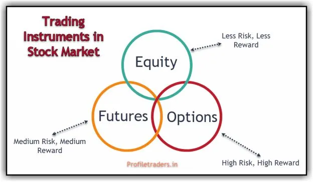
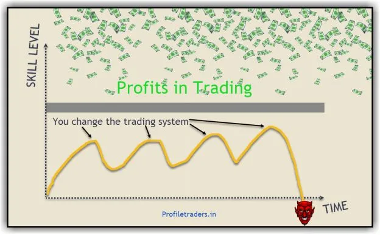
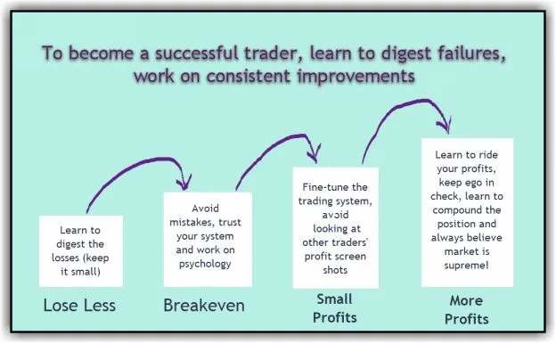

Ask any established trader what their most important tip for the people who are aiming at full-time trading is, and every one of them suggests, "Not to quit the current job immediately." If you have a 9 to 5 job, you can still earn some passive income from trading by following specific steps. These steps help to improve your trading skills while working 9-to-5 and allows you to enjoy your life.
But any person has to overcome the below roadblocks to get better results in trading:
Here are the 8 steps and tips that will help you to make money in trading while working with your 9-to-5 job:
It is essential to have the right trading system with a suitable timeframe that complements your personality and schedule. For example, if you have a tight schedule in your 9-to-5 job, there is no point in looking for trade opportunities in a 5-minute chart. Because a 5-minute chart demands more screen time and with your work schedule, you will not be able to give justice to your work and trading.
Opportunities do exist in all timeframes. Any intelligent person will pick the suitable timeframe, wait for the proper trade setup, and manage the trade within the money management limits.
The two essential trading methods suitable for working professionals are:
Tip-1: Check your work schedule and decide whether you want to become an intraday trader or positional trader. If you pick intraday trading, please note you get more trade opportunities, and hence noise and failure rate will also be more.
We have below 3 trading instruments in the stock market:
So, a trader should know how these trading instruments work.
Let us take an example to understand better.
Assume one Trading Account has Rs. 3,30,000 (3.3 Lakh).
ACC Current Market Price CMP is 1620.
Assume ACC went 5% (81 points) up in the next 2 trading days. (Explanation sake)
With 3.30 lakh, one can buy 203 shares.
Profit made due to 5% upside movement is Rs.16,443 (203 shares X 81 points)
ROI on Capital is 5%
With 3.30 lakh, a trader can buy 1 lot (500 shares).
Profit made due to 5% upside movement is Rs. 40,500 (500 QTY X 81)
ROI on Capital is 12%
With 3.30 lakh, one can buy 7500 QTY of 1700 CE of ACC (assuming premium at 42)
Profit made due to 5% upside movement is Rs. 2,43,000 approx (IV at 40%)
ROI on Capital is 74%
ROI varies drastically in all the 3 trading instruments.

Please note this explanation is not intended to encourage trading in options. F&O trading carries the highest risk levels, and the above description gives an overview of how the three trading instruments work by offering various degrees of risk and reward.
Tip-2: Start your trading with equity. Even if you get failures, you lose less money. One can try 'futures' only when they are profitable with equity trading. Similarly, one should try 'options' only when they are profitable with futures trading. Please note these derivative products just amplifies your trading results!
A person starts to learn how to drive a car. Today he starts with one car; get to know all the basics. Tomorrow he will start the process again with another vehicle, and this process continues. Every day he will continue the learning with a different car. Do you think he will be able to complete the learning process?
It is better if he sticks to one car until he completes all the learning process and can drive any car as he wishes. Isn't it?
But when it comes to trading, many people forget this process. People study one indicator or a trading concept; try it for some time. When they get some failures, they immediately start using another system or start looking to add one more indicator in their trading system, thinking it will fix it. It's a vicious cycle!
"All you need is one pattern to make a living" - Linda Raschke
One can finalize a trading system after complete back testing. If the system shows positive expectancy in the long run, then it can be deployed in trading. But ensure not to lose more than 2% of your capital on any trade.

Tip-3: Take an oath not to change your trading system for one whole year. Study every mistake, identify the route cause behind the mistake, and avoid the mistake next time in your trading.
Psychology means the mental factors or emotions governing a situation or activity. So, when we say trading psychology, it implies cognitive factors governing trading.
Four primary emotions revolving around stock market trading are greed, fear, regret, and hope. Suppose a trader works to get more conviction on his trading system and improves the psychology (to avoid unnecessary trades, riding profits, adhering to money management rules). In that case, these issues get dissolved automatically.
Tip-4: Psychology plays a crucial role as compared to the trading system. Affirmations, developing gratitude for what you have, and meditation help to get a better mindset and make better trading decisions.
All our upbringing thought one common thing, which is 'failure is bad'. None of the parents like to see their kids failing in any exams. Hence, they take all the measures to ensure their children pass all the exams. This kind of upbringing saves the lesson, 'failure is unacceptable' in our subconscious mind.
Because of this one reason, many traders feel bad (sometimes pathetic) even if they lose little money in a trade. It's not because they can't afford that money; it's because they have a tough time digesting the failure!
At this moment, they develop a revenge attitude and take more trades or more risk per trade to get back the money from the market as soon as possible. Needless to say, they end up losing more money.

Tip-5: – Failure is inevitable in trading. Nobody wins 100% of their trades. A successful trader loses less money when he is wrong and makes more money when he is right.
The difference between ‘A Good Trade' and 'Good Trading' is a lot of money. Most of the traders feel high when they more profits in one trade and hence they always run behind one such big trade.
It is not wrong to get one good trade to make more profits, but a person will lose many small opportunities to make consistent profits if he runs behind it. Besides, traders commit many mistakes such as taking more trades in a day, taking unnecessary trades, etc.
Tip-6 – Any trader can only control how much he will risk in a trade. The market will decide how much to reward for the trade. Hence, follow the entry and exit mechanism as defined in your trading system.
Nassim Nicholas Taleb, the author of the famous book "The Black Swan" once said:
"The three most harmful addictions are heroin, carbohydrates, and a monthly salary."
Most people have some dreams in their heart, but they don't pursue their dream because they are addicted to their salary. Most of us start to make some commitments (house loan, car loan, etc.) whenever we get into a new position. We can't even survive if we don't get the salary for a month because of these commitments.
Profits from trading vary every month based on the market conditions. If we have some financial commitments every month, it always brings some pressure in the mind even if you are a salaried person. Hence, it is better to stay out of these commitments when you are learning to trade.
When you don't have any commitments, you don't get addicted to your salary; your mind is free most of the time, making better trading decisions.
Try to add 20-25% of your salary every month to another savings account. If you are already successful in trading, then you can add this amount to your trading capital. Otherwise, park the amount in some source where you get some returns and also easy to withdraw.
Tip-7 – Don't invest in depreciating assets by taking a loan. Many people buy a house taking over 75% of value through a bank loan. When they get into some challenging situations like a job loss, health emergency, they suffer more as they will not be able to sell the house and can't pay the EMI. A simple way to avoid this problem is to reverse the calculations. Never buy a house until you save at least 50-75% of the cost through savings.
Trading is important; making money in life is also vital, but this life is always precious than all of them. What is the point of having tons of money if you can't enjoy it? What is the benefit of becoming a successful person if you are not happy?
Tip-8 – Every month, visit a new place. You don’t have to plan an expensive vacation; a nearby good place like a forest or beach is also fine. Develop a hobby to stay fit; it can be hitting the gym, practicing yoga every day, or playing some game.